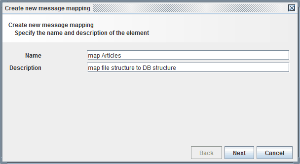

Message mappings

Topic content
Concept
Message mappings describe the mapping of a message with a given structure to another message having another structure. Both, the structure of the source message as well as the structure of the target message are defined by Message types.
Basically there are three different types of mappings
•Graphical mappings describe the mapping of the source to the target structure using a graphical editor. Basically graphical mappings are declarative mappings. The so called IDOC mapping and the Target only mapping are special types of graphical mappings.
•XSLT mappings describe the mapping of the source to the target structure with an XSLT script. XSLT mappings are mappings using the programming language XSLT which is explicitly designed for mappings.
•Procedural mappings In contrast to graphical mappings, a procedural mapping defines the creation of the target message by a procedure written in a programming language. In Orchestra we use the so called Extended Java mapping. The language used to describe the mapping procedure is Java with embedded XPath. Orchestra uses a preprocessor to create plain Java code from this mapping procedure.
For historical reasons there still exists a Java mapping to define a mapping but it is no more in use.
Creation
The group message mappings in the scenario element tree contains all message mappings of the current scenario.
To create a new mapping select the group message mappings and click on the right mouse button. Then a popup menu opens with the options and .
With you can import a mapping that was exported to an XML file. This way you can transport mappings from one scenario to another.
if you select a dialog opens where you must enter the name and optionally a description of the new Message mapping.

Then click on the button .
In the next dialog you select the type of mapping you want to create and click on the button .

Here you have to select one of the different mapping types described above.
In the next steps you have to select the Message types describing the source structure and the target structure. An exception to this is the Target only mapping where you ony have a target structure and therefore no source message has to be selected.
Configuration
To configure the mapping click on the entry in the scenario element tree and the appropriate editor is opened. See the description of the different mapping types for details.
To use a mapping in a Process models select it in the scenario element tree, then move the mouse into the drawing area of the process model editor and click again.